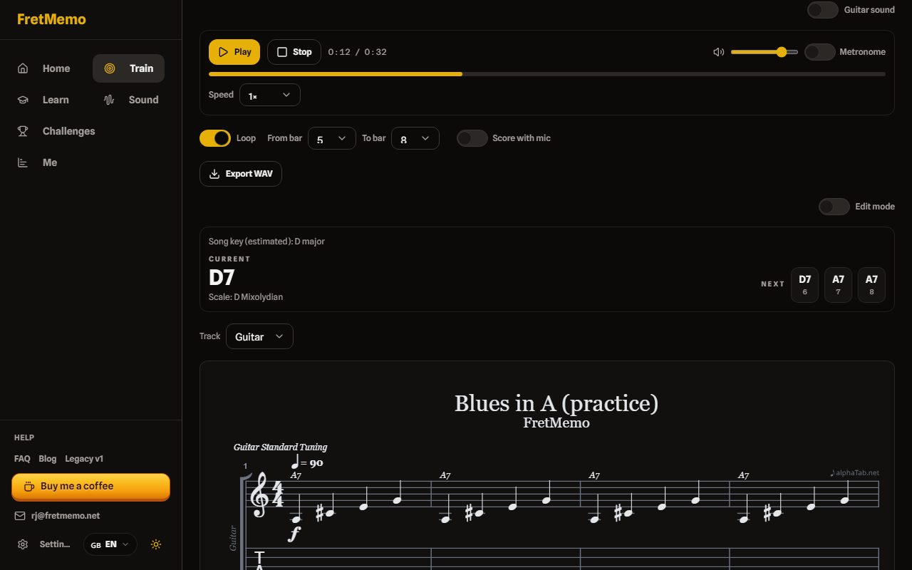

How to practice a song on guitar, in short: loop 2 to 4 bars, slow them down until they're clean, then find the bars you still miss and loop those. FretMemo does each step for free in the browser with a Guitar Pro file you import. It can also score every bar through your microphone, which takes the guessing out of finding the weak ones.
Most of us practice a song by playing it from the top, stumbling at the same spot, and starting over. The intro gets very good and the bridge never does. I did this for years, and the fix turned out to be boring and mechanical, which is why a tool can help with it.

Why playing from the top doesn't work
Playing a song start to finish feels like practice, but most of the time goes to the parts you can already play. The hard passage gets a few seconds per run, and those seconds are usually the same mistake again. A loop changes the ratio, because every repeat is the hard part.
Speed is the other half. If you can't play a bar cleanly at full tempo, playing it at full tempo again mostly rehearses the wrong version. Slow it down until you play it right several times in a row, then speed up a step. This is old, common advice. What I wanted was to set the loop and the speed in two clicks and get back to the guitar.
What the song viewer does for practice
The "Loop" switch repeats a bar range that you pick with "From bar" and "To bar", counted from bar 1. It starts at bars 1 to 4, it follows tempo changes inside the song, and it works in both playback engines. In the default soundfont mode, "Speed" goes from 0.5× to 1.5×. The "Guitar sound" mode plays each track you've given a voice through an amp tone and the rest as "Direct (soundfont)", but it hides the speed control, so stay in soundfont mode for slow work.
With "Score with mic" on, FretMemo listens while you play along and compares each beat of the track on screen with the pitch it hears. A beat counts as a hit when the note name matches an expected note, in any octave. Silence doesn't count as a miss, so skipping a bar won't drag its score down; wrong notes will. The "Bar accuracy" strip shows each bar's hit percentage, and "Loop weak bars" sets the loop to the run of up to 4 consecutive bars with the lowest score. Bars you didn't play are left out.
The viewer also remembers where you are with each song: speed, loop on or off and its range, the mic stats per bar, and the last position. When you come back it offers "Resume from" with the time, if you were more than 3 seconds in. Progress is stored under a SHA-256 hash of the file's bytes, so if you delete the song and import the same file again, even renamed, it all comes back. A different file never inherits it. If you fix a note in the free online guitar tab editor and save, the progress moves to the new version.
The chord prompter and scale hints
Above the score, the prompter shows the chord at the cursor ("Current"), the next three chords ("Next"), an estimated major key, and a scale for the current chord. The chords come from the chord symbols in the file. If there are none, FretMemo estimates them from the notes of the first track. A chord that belongs to the key gets the mode of its scale degree (IV gets Lydian, vi gets Aeolian). Other chords get a default by quality, such as Mixolydian for a dominant 7, Dorian for a minor chord and Locrian for m7b5.
The screenshot shows the key estimate getting it wrong in a way worth understanding. The song is a blues in A, and the prompter says "Song key (estimated): D major". Every chord in this blues is a dominant seventh, and A7 is the V7 chord of D major, so a guess that only picks major keys leans towards D. The hint for the D7 chord, D Mixolydian, still fits that chord. I'd treat the key line as a rough guess and the chord-by-chord scales as the useful part. They are meant for improvising over your own song, which is where the step-by-step guitar improvisation path leads.
How to practice a song with FretMemo, step by step
- Import the song at fretmemo.net/train: expand "Your Songs", click "Import Guitar Pro" and pick the file. The free Guitar Pro viewer online post explains the formats.
- Pick a hard passage of 2 to 4 bars. Turn on "Loop" and set "From bar" and "To bar".
- Set "Speed" to 0.75× (or 0.5× if the passage is a mess), press "Play" and play along.
- When you get through the loop cleanly a few times in a row, raise the speed one step.
- Turn on "Score with mic", allow microphone access, and play a longer stretch or the whole song.
- Read the "Bar accuracy" strip and press "Loop weak bars". Go back to step 3 with that loop.
- Press "Reset" when you want fresh stats, for example after a week on the song.
A 20-minute session on one song
This is how I'd split 20 minutes. Start with one pass of the whole song with "Score with mic" on, at a speed where you can mostly keep up. Spend the next 12 minutes or so on "Loop weak bars" at 0.75×, moving up to 1× once the loop is clean. Finish with the loop off and one more scored pass, so you can see whether those bars moved.
The next day the song opens with your speed, loop and stats where you left them, so you can skip the warm-up pass and go straight back to the weak bars.
Limits
- Scoring needs microphone permission.
- It checks the note name only. Octave, string and timing are not checked, so a note on the wrong string or a beat late can still count as a hit.
- Speed works only in soundfont mode.
- Mic scoring and Loop are disabled while "Guitar sound" renders or a WAV export runs.
- There is no count-in in the song viewer, only the metronome switch in soundfont mode.
- If no chords can be read from the file, the prompter says it is unavailable.
FAQ
How do I loop a section of a song to practice guitar?
Import the song as a Guitar Pro file into FretMemo, turn on Loop and choose From bar and To bar. Playback repeats that range until you turn it off, and in the default soundfont mode you can slow it down too. Two to four bars is a good size for one loop.
Can I slow down a Guitar Pro song to practice it?
Yes. In FretMemo's song viewer, Speed goes from 0.5× to 1.5× in the default soundfont mode. Guitar sound mode hides the speed control, so switch it off for slow practice.
How do I find the bars I play badly?
Turn on Score with mic in FretMemo and play along. The app compares each beat with the note name it hears and shows a hit percentage per bar in Bar accuracy. Loop weak bars then loops up to 4 bars in a row with the lowest score.
Will I lose my practice progress if I import the song again?
No. FretMemo stores progress under a hash of the file's content, so the same file brings back its speed, loop, mic stats and position, even if you renamed it. A different file starts fresh.
Loop your hardest bars
Import a Guitar Pro file, set a 2-4 bar loop and find out which bars need the work.
Practice a song Free, no account, runs in the browser.